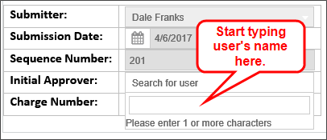
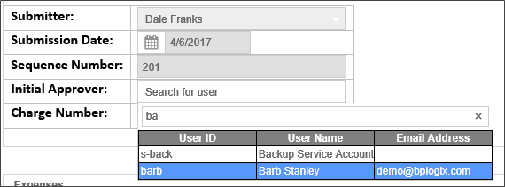
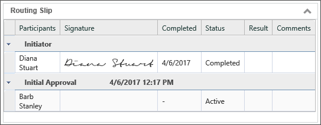
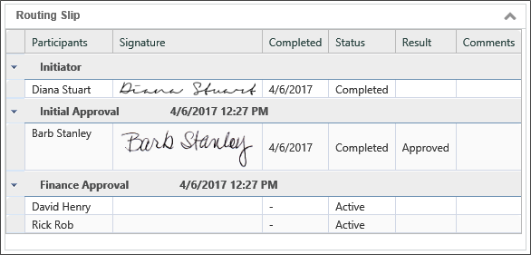
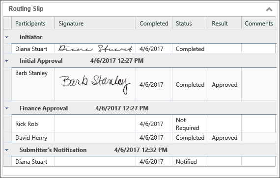

These are all tasks that you will need perform on a regular basis, so the sample project has been designed to help you learn how to use them, and introduce you to how easy it is to do complex things with Process Director.
Process Director uses Process Timelines and Workflows created by users to model a business process. Process Director implements and completes these modeled processes by collecting user-supplied information from electronic forms, or Forms. External documents, such as spreadsheets or word processing documents, can also be attached to the processes. As each process is performed, Process Director sends email notifications to users to notify them of process tasks that must be completed. Finally, users can view or search for ongoing or completed process instances, as well as all of the objects associated with those instances, by using Knowledge Views.
Figure 1: Process Director Overview
In short, Process Director:
All of these features enable Process Director to provide full automation, auditability, and tracking of your business processes.
The sample project demonstrates a notional travel reimbursement request process, a common requirement for many organizations. In this process, an employee submits a travel request that a manager then approves. If the request amount is less than $1,000, the travel request can be funded without additional review. If the amount exceeds $1,000, the request must first be sent to the Finance group for additional approval.
In our sample project, this process begins with a user filling out a travel request form. The requestor selects an initial approver, and enters the expenses incurred during travel. The requestor submits the form, which starts the approval process by sending an email notification to the approver specified on the form. The notification lets the manager know that a task is waiting for her action. She opens the form using a link in the notification (or by visiting her task list), and indicates her approval by clicking on the appropriate button. If the request exceeds $1,000, it is routed to the Finance Group for additional approval. When the approvals are complete, Process Director notifies the employee that his request has been approved (or rejected).
This sort of approval process probably sounds familiar to you, since it’s a very common type of workflow. Process Director excels at managing this sort of process—indeed, it’s at the core of Process Director’s functionality. Process Director manages these processes automatically, making them more efficient. Increased efficiency saves your organization the time and money that would otherwise be required to manually oversee the process.
So, let’s look at the details of how to design and implement the process in Process Director.
The sample project is comprised of a number of objects. To view these objects, login to your Process Director trial site. You are now logged in as one of the pre-configured Trial users. Once Process Director is open, navigate to the sample project by clicking on the Getting Started button in the upper left corner of the screen to open the home page of the Getting Started workspace.

Figure 2: Getting Started Workspace
Finally, click on the Travel Expenses Request Form button in the menu bar at the top of the screen to open Form.
Initially, you’ll see three different sections on the Form. There is a fourth section, but it will not appear until the total amount of the travel request exceeds $1,000. The first section of the form is labeled “User Information”, and one of the first things you’ll notice is that most of the fields are already filled out.

Figure 3: Sample Form User Information Section
Process Director can pre-fill a Form with many types of information. In this case, Process Director knows that you are the individual filling out the form, knows the current date, and generates and assigns a sequence or serial number for your request. Knowing these things enables Process Director to fill in most of the User Information section for you. As an aside, Process Director can also extract information from databases, SharePoint, ERP or CRM systems, etc., and place that data into your form.
The Initial Approver field is a Process Director UserPicker control that enables you to choose the user who will provide the first level of approval for your travel request. Select the box, and a dropdown will appear with a text box, into which you can start typing a user's name.

Figure 4: User Picker Type Ahead
Typing into the text box automatically displays a list of users whose names match what you have typed.

Figure 5: Type Ahead in Action
Select the user who will be the initial approver, then click the OK button to complete your choice. The user’s name will appear in the text portion of the UserPicker Control. For the purpose of this walk-through, select “Barb Stanley” as the Initial Approver.
Next, there is a Charge Number dropdown. This dropdown control was built to extract data from a database to fill the control. The list of charge numbers you see is generated from a table in the Process Director internal database. When we rebuild the project, we’ll get into more detail about how the list of charge numbers was imported into the database. For now, select a charge number from the dropdown control.

Figure 6: Sample Form Expenses Section
The Expenses section enables you to fill in daily expense amounts for the travel request. Process Director enables you to build repeating lists on the fly when filling out a form. If you click the Add Expense button, a new row with all the expense elements will be added to the table. Clicking on the Delete button at the end of each row will delete that row from the table.
The first column in each row displays a Process Director DatePicker field. Click on the calendar Icon to select a date from the drop-down calendar that appears. Then, fill out the remainder of the first row with the data that appear in Figure 7. As you do so, the Form will automatically calculate the total cost of the expenses in each row, as well as calculating the Total Expenses amount of the request.
When you have completed filling out the first row, click the Add Expense button to add a new row. Continue filling out the table as shown in Figure 6: Sample Form Expenses Section. Once the Total Expenses amount exceeds $1,000, a new section, labeled “Amount Requires Justification” appears on the Form. For our process, expense amounts over $1,000 require justification. If the total expense amount is less than $1,000, the justification section is not needed, so Process Director doesn't display it.

Figure 7: Sample Form Amount Requires Justification Section
In this section of the form, select a reason from the Reason for Travel dropdown. This dropdown is filled from the Reason for Travel Dropdown object in the BP Logix Getting Started Sample Project folder. The Dropdown object is another method that Process Director provides for you to fill—and maintain—dropdown items. Again, we will look at this in more detail when we rebuild the project in the next section.
Now, type in some justification text in the Comments textbox.
The final section of the Form is the Supporting Documentation section, which enables you to attach files to the request. If you click on the Add Document button, the standard file dialog box will appear, and you can browse through your file system to find a document to attach.

Figure 8: Sample Form Supporting Documentation Section
Once you have filled out the form completely, click the OK button to save and submit it.
Once the form has been submitted, Process Director begins to run the Travel Expense Approval Process Timeline. This Process Timeline controls the approval process for the travel request you just created.
The first Process Timeline activity is the Initial Approval activity, which is assigned to the person you selected as the initial approver when you filled out the form. To run through that step, log out of Process Director, then log back in as the approver you selected. Assuming you selected Barb Stanley as the initial approver, use the user name “Barb” with the password "password1", to log back in.
When you log in, The Getting Started workspace's home page will show a Task List pane the upper left section of the screen. There will be a task in the list that says “Travel Expenses Request FormSubmitted On…” Click on this task, and the Form will open, showing the request.
There will also be two new sections on the Form. The first new section is the Approval Comments section.

Figure 9: Sample Form Approval Comments Section
The Process Timeline is set up to require comments in this section if you disapprove the request. For the walk-through, we want to see the whole process work all the way through to the finish, so we are going to approve the request at this stage.
Before we do so, take a look at the final section of the form, which is the Routing Slip section.

Figure 10: Sample Form Routing Slip Section
The routing slip gives you a way to visually track where you are in the request’s approval process. Perhaps more importantly, it shows you where you’ve been: who has taken action in the process, what actions they took, and any comments they added along the way. In this case, we can see the date the originator submitted the initial request. We also see that the request is currently assigned to Barb Stanley.
Let’s move the request along by clicking the Approved button at the bottom of the form to close and save the request, and initiate the next activity on the Process Timeline. In this case, since the amount was over $1,000, the request will be sent to all the members of the Finance group.
We need to log back in as a member of the finance group. So, log out of Process Director again, and log back in as David Henry by using the user name “david” with the password "password1".
Since David Henry is a member of the Finance group, the Task List pane of David’s home page will show the request task is waiting. Click on the task to open the form.
As before, the “Approval Comments” and “Routing Slip” sections are displayed on the form, but now the routing slip has changed to reflect Barb Stanley’s approval.

Figure 11: Sample Form Routing Slip for Finance Approval
Notice that we see all participants' approvals and signatures. As an aside, each user can have a signature file associated with their account to display a physical signature. Describing that process goes beyond the scope of this walk-through, but now you know the capability exists.
At this stage, every person in the Finance Group has this task showing in their task list. Only one member of that group actually needs to work on this task, so the Process Timeline activity will assign it to the first member of the Finance Group that accepts it by opening the form and clicking the Accept Task button. Click on Accept Task and note that the routing slip changes to show that David has this request as an active task, while the other members of the Finance group are no longer required.
Now you can click on the Approved button to approve the travel request. That task having been completed, the final step of the Process Timeline notifies the initial submitter that the travel request has been approved. At this point, the travel request process is complete.
Let’s take a look at the finished request, to see the routing slip one last time. Log out of the system, then log back in as yourself. Once you've logged in, click on the My Expense Requests button at the top of the Process Director screen to open the knowledge view that shows all of your travel requests.
Now click on the Travel Request you just completed to open the Form. When you scroll down to the Routing Slip section, you can see how the routing slip looks in its final form.

Figure 12: Sample Form Final Routing Slip
The completed routing slip shows us everyone who participated in the process, when they participated, and what the final disposition was. It is automatically created within every process, and can be viewed using the process administration interface, or, as is the case in our sample, directly on the form. The routing slip provides a clear, auditable history of the process that can be retrieved and examined for any number of reasons, including audits, process improvement reviews, etc.